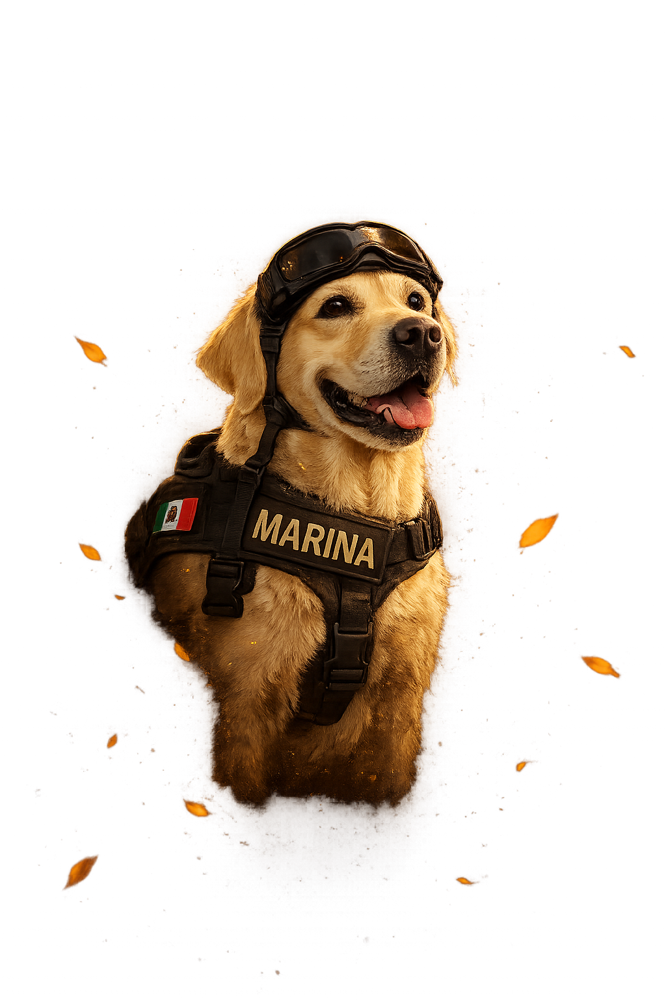

DÍA DE MUERTOS 1A
Frida
UNA HUELLA QUE NUNCA SE BORRA

Algunas huellas no se borran...
se quedan para siempre en el corazón.
Biografía de Frida
Frida fue una labrador retriever de color miel de la Secretaría de Marina de México (SEMAR), convertida en símbolo nacional e internacional de la búsqueda y rescate tras los sismos de 2017. Durante su carrera localizó a 55 personas: 12 con vida y 43 sin vida.
Origen y formación
Frida nació el 12 de abril de 2009 en la Unidad de la Secretaría de Marina, hoy Subgrupo de Control Canino del Estado Mayor General de la Armada de México. Desde cachorra mostró concentración, curiosidad, temperamento equilibrado y capacidad de adaptación, rasgos que la hicieron apta para el trabajo de búsqueda y rescate.
Comenzó su entrenamiento a los tres meses de edad y completó en ocho meses un curso que normalmente tenía una duración de un año, un desempeño considerado excepcional. Su preparación la especializó en localizar personas atrapadas bajo estructuras colapsadas.
Carrera de rescate
Su primera misión fue en 2010, cuando viajó a Haití tras el terremoto que devastó ese país. A lo largo de su servicio participó en operaciones en México, Haití, Guatemala, Honduras y Ecuador.
Entre sus intervenciones más conocidas están la explosión de la Torre de Pemex en Ciudad de México en 2013, el terremoto de Ecuador de 2016 y los sismos de septiembre de 2017 en México.
Durante las labores en Oaxaca ayudó a localizar a 12 personas en Juchitán.
Reconocimiento mundial
Frida se volvió una figura emblemática durante los sismos de septiembre de 2017, cuando imágenes de ella trabajando con botas protectoras, goggles y una máscara recorrieron el mundo.
Su imagen trascendió el ámbito operativo: se convirtió en un símbolo de solidaridad, trabajo en equipo y de la capacidad de los equipos caninos de rescate ante los desastres.
Retiro y fallecimiento
El 24 de junio de 2019, Frida causó baja del servicio activo de la Armada de México en una ceremonia oficial. Después de su retiro permaneció bajo custodia del Subgrupo de Control Canino, donde recibió cuidados especiales durante su etapa geriátrica.
Frida falleció el 15 de noviembre de 2022, a los 13 años, por padecimientos asociados a su edad. La Secretaría de Marina informó su muerte y destacó su trayectoria como una de las perras rescatistas más reconocidas de México.
Legado
Frida dejó un legado doble: el humanitario, por las vidas que ayudó a encontrar y las familias a las que pudo dar respuestas; y el institucional, al visibilizar el trabajo de los equipos caninos de la SEMAR.
Su historia sigue siendo un referente en México sobre la importancia de los perros de búsqueda y rescate.
Fuentes de consulta
Secretaría de Gobernación de México, El Financiero, CBS News, El País / Verne, Gizmodo en español e Infobae.
¿Por qué elegimos a Frida?
Elegimos a Frida para un altar de Día de Muertos porque representa algo muy bonito de nuestra cultura: la esperanza que camina entre la ruina. Ella no solo fue una perra rescatista; fue la nariz, las patas y el corazón de miles de personas que, bajo los escombros, aún esperaban una señal de vida. Porque nos enseñó a no rendirnos Frida se atrevió a llegar a los lugares donde el miedo era más grande: Haití tras el terremoto de 2010, la explosión de la Torre de Pemex, el sismo de Ecuador y los terremotos de 2017 en México. Con sus goggles, su arnés y sus botas, avanzaba donde los humanos apenas podían entrar, buscando con paciencia a quienes el mundo ya había dado por perdidos. En un altar, Frida nos recuerda que el Día de Muertos no es solo recordar a los humanos si no también a quienes se fueron: también es honrar a quienes, en vida, se entregaron por los demás. Ella localizó a 55 personas —12 con vida y 43 sin vida— y, aun cuando encontraba a quienes ya no podían regresar, les devolvía a sus familias la posibilidad de despedirse. Porque fue esperanza con patas Cuando México lloraba en septiembre de 2017, la imagen de Frida trabajando entre escombros se convirtió en un abrazo colectivo. No hablaba, no prometía milagros; solo olía, escuchaba y ladraba cuando encontraba una pista. Y ese ladrido era, para muchas familias, la diferencia entre la desesperación y una última chispa de esperanza. Por eso Frida pertenece a un altar: porque encarna el puente entre los vivos y los que ya partieron. Su trabajo consistió, en el fondo, en acompañar a las personas en el momento más frágil de su historia, ya fuera para devolverles el aliento o para llevarlas con dignidad de regreso a casa.
Nuestra ofrenda
Esta ofrenda es un camino de luz, amor y regreso, inspirado en Frida: la perrita que enseñó a México que, incluso entre los escombros más dolorosos, siempre se puede buscar vida, esperanza y una despedida digna. Cempasúchil y flor de terciopelo: son el sendero de color que guía a las almas a casa, como Frida guió con su olfato y su valentía a quienes estaban perdidos. Sal: purifica el camino del espíritu, para que pueda viajar en paz, sin dolor y sin ataduras. Agua en la jarra: alivia la sed del alma tras su recorrido; es el mismo cuidado que Frida recibió y que ella ofreció, en forma de esperanza, a tantas familias. Copal e incienso: elevan oraciones y limpian el espacio para que el encuentro entre los vivos y los que ya partieron sea sereno. Veladoras: representan la luz que no se apaga; así como Frida fue luz en la oscuridad de los sismos, estas velas iluminan el regreso de los perritos queridos. Calaveritas de azúcar: nos recuerdan que la muerte puede mirarse con ternura, memoria y gratitud, no solo con tristeza. Croquetas y comida de perro: son la ofrenda más íntima: el alimento que consintió su cuerpo en vida y que ahora dice “sigues siendo bienvenido en esta casa”. Juguete de perro: guarda su alegría, sus juegos y su personalidad; es la manera de recordar su vida, no solamente su ausencia. Collares: simbolizan pertenencia y vínculo; aunque ya no estén en el cuello de un perrito, el amor que representan sigue uniendo a la familia. Semillas: hablan de continuidad y renacimiento: de la vida que sigue creciendo después de la despedida. Biblia y crucifijo: expresan fe, protección y esperanza en una vida más allá de esta. Silueta de Frida: es el corazón del altar. Representa a la perrita rescatista que localizó a 55 personas —12 con vida— y que se convirtió en símbolo nacional de esperanza, lealtad y servicio.
La ofrenda dice, con cada elemento: “Aquí hay luz para que encuentres el camino, agua para descansar, flores para guiarte y amor para recordarte.” Pero con la silueta de Frida añade otra promesa: que los perritos no solo nos acompañaron en la vida; también se convierten en guías hacia el más allá, porque conocieron el camino del amor incondicional. Frida representa a todos los perritos que partieron: los héroes con cuatro patas, los guardianes silenciosos y los amigos que, como ella, dejaron huellas de esperanza en quienes los amaron.ssssss
Huellas eternas
Hoy los recordamos a nuestros mascotas no como ausencias, sino como guías. Porque si alguien supo acompañarnos hasta el último instante, fueron ustedes: con su mirada tranquila, su cola que nos recibía como si fuéramos el centro del mundo y su amor que nunca pidió nada a cambio. En la tradición del Día de Muertos, creemos que los que se van no desaparecen: encuentran el camino de regreso a casa guiados por la luz, el cempasúchil y el recuerdo. Y qué mejor guía que un perrito: ellos siempre supieron encontrar el camino hacia nosotros, incluso cuando estábamos perdidos, tristes o escondidos detrás de una puerta. Ahora, desde el más allá, creemos que siguen haciendo lo mismo: olfateando el camino, iluminando el sendero y esperándonos con la misma alegría de siempre. Héroes pocos reconocidos, pero héroes al fin. Los recordamos con cariño y gratitud, porque nos enseñaron que la vida es más hermosa cuando se comparte y que el amor verdadero no tiene fecha de caducidad. Pensamos en Frida, la labrador de la Marina que buscó vida entre escombros en México, Haití, Guatemala y Ecuador; localizó a 55 personas durante su servicio y se convirtió en símbolo de esperanza para todo un país. Frida nos enseñó que incluso en la oscuridad más profunda vale la pena seguir buscando, porque cada vida importa. Pensamos en Eco y Evil, perros pastores alemanes de la Secretaría de Marina que trabajaron en Oaxaca y en la Ciudad de México tras los sismos de 2017, ayudando a encontrar personas atrapadas bajo los escombros. Pensamos en Titán, Ecko, Eska, Eros, Acertijo y Nahual, compañeros de brigada que también pusieron su olfato, su valentía y su nobleza al servicio de México. Y pensamos en todos los perritos sin nombre que un día fueron familia: los que dormían a los pies de la cama, los que esperaban en la puerta, los que nos acompañaron en silencio cuando las palabras no alcanzaban. Ellos también son héroes, porque su mayor hazaña fue amarnos sin condiciones.
“Perritos queridos: ustedes fueron nuestra brújula en la vida; ahora sean nuestra luz en el camino de vuelta. No nos digan adiós, solo esperen por nosotros, como siempre lo hicieron. Aquí siguen siendo amados, aquí nunca dejaron de ser familia.”
Binomios caninos
A todos los binomios caninos —a los perros de búsqueda y rescate, a los guías, a los detectores, a los guardianes y a los compañeros silenciosos— gracias por enseñarnos que la lealtad no se entrena: se nace con ella y se demuestra cuando más duele. Gracias por caminar entre escombros, entre humo, entre miedo y entre lágrimas, buscando una respiración, una mano, una vida. Gracias por no rendirse cuando el mundo se detiene. Ustedes nos recuerdan que un ladrido puede ser una promesa, que una nariz puede encontrar esperanza y que cuatro patas pueden sostener el corazón de todo un país.
Pero mientras honramos a estos héroes, no podemos olvidar a los perritos que aún esperan una mano amable. El maltrato no siempre se ve en un golpe: también es el perro amarrado bajo el sol, el que no tiene agua, el abandonado, el que aprendió a temblar ante la presencia de una persona. Muchos animales rescatados cargan heridas físicas y emocionales que tardan en sanar incluso después de encontrar una familia. Hoy podemos rendir homenaje a Frida, Eco, Evil, Titán y a tantos binomios que han servido a México; pero también podemos preguntarnos: ¿cuántos Frida están siendo lastimados ahora mismo? ¿Cuántos perritos que hoy sufren podrían, mañana, encontrar a alguien atrapado, guiar a una persona con discapacidad, detectar una enfermedad o salvar una vida?
"Trátalos como quienes son: no como objetos, no como diversión, no como algo desechable. Trátalos como los ángeles de cuatro patas que son; porque el perrito que hoy rescatas puede ser el que mañana te rescate a ti.”